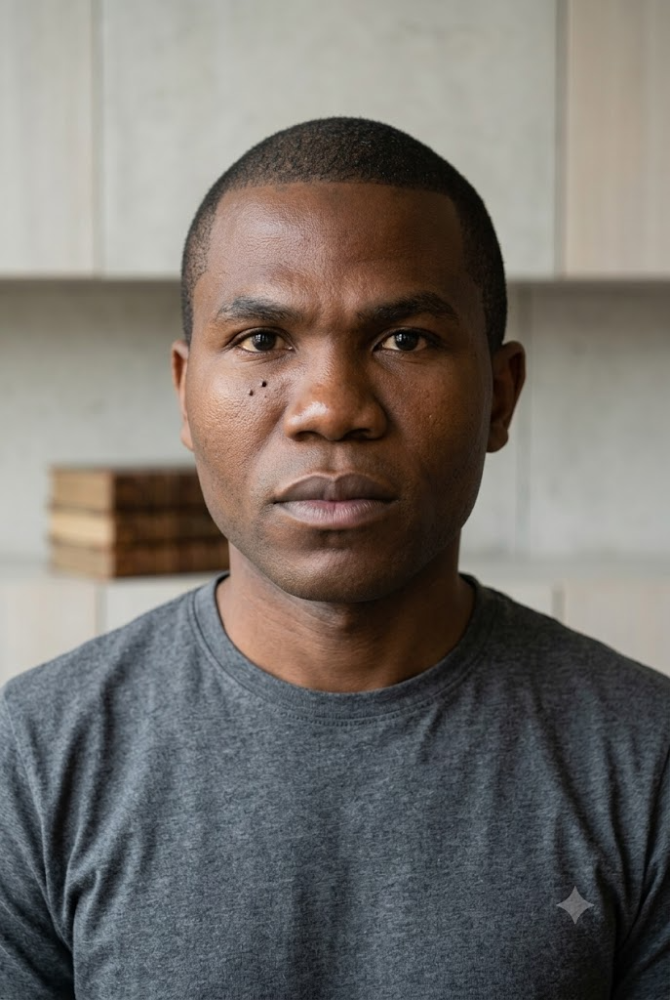
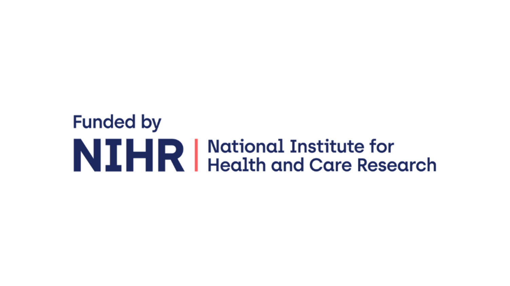
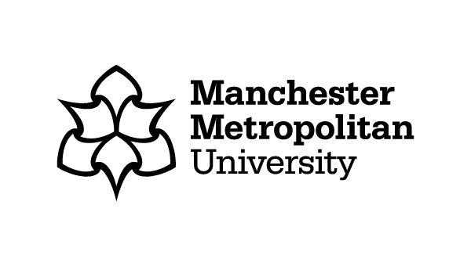
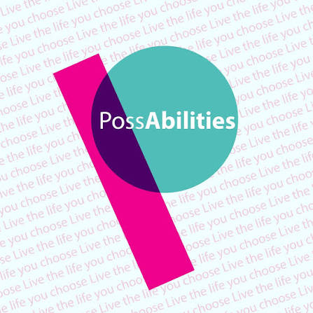
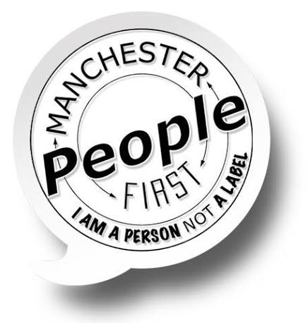

Listen first
People with learning disabilities, carers and supporters guide the questions we explore.
Inclusive AI Research · NIHR209140
GenAI Together is exploring how generative AI can support people with learning disabilities in everyday life — through research shaped together with people with lived experience.
Get in touchFind out moreWatch our project launch
Video description: a three-minute project launch film introducing GenAI Together. Captions and a transcript are available in the Vimeo player.
At a glance
People with learning disabilities, carers and supporters guide the questions we explore.
We develop ideas that are useful, understandable and practical.
We will create guidance and recommendations for responsible AI in social care.
About the project
GenAI Together — Leveraging Generative AI to Support People with Learning Disabilities in Their Daily Lives — is funded by the National Institute for Health and Care Research through its Research Programme for Social Care. The project began on 1 February 2026 and will run for 18 months, ending on 31 July 2027.
The people behind the project

Project Lead and Senior Lecturer, Manchester Metropolitan University.

Project Co-Lead and Reader in Learning Disability Research.

Co-Investigator, Manchester Metropolitan University.

Research Associate. Job's research harnesses generative AI, text-to-3D modeling, and multimodal interfaces to craft intuitive, empowering digital tools alongside people with learning disabilities and their carers.

Co-Investigator, Nottingham Trent University.

Co-Investigator, Nottingham Trent University.
Working together




Events
Upcoming events will appear here as they are confirmed.
Research outputs
GenAI for people with learning disabilities.
Practical learning materials for introducing GenAI research.
Further research outputs will be added here.
Contact Us
Based at the Dalton Building, Faculty of Science and Engineering, Manchester Metropolitan University.
Address: Chester St, Manchester M1 5GD
Email: j,oyebisi@mmu.ac.uk